×
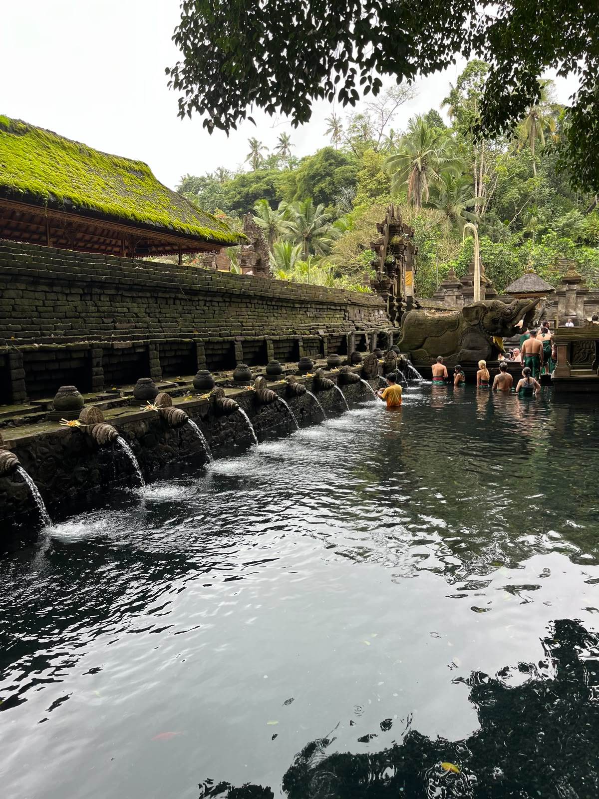
Bali: Endonezya'nın Kalbi
Pirinç tarlalarında yürüyüp okyanus kenarında saatlerce vakit geçireceğiniz, şifalanacağınız bir ada. Burada geçireceğiniz her gün, sizi adanın bambaşka bir köşesiyle tanıştıracak.
Bali Seyahat Rehberi
Bali, Endonezya’nın en çok merak edilen adalarından biri. Ama bence burayı
güzel yapan şey sadece plajları değil. Yemyeşil pirinç tarlaları, tapınakları, volkanları,
küçük köyleri ve her köşede karşınıza çıkan farklı bir manzarası var. Ben özellikle
doğasına ve insanlarına bayıldım. Adanın genelinde insana iyi gelen, sakin bir taraf var.
Bali’de bir gününüz pirinç tarlalarının arasında yürüyerek, başka bir gününüz bir tapınağı
keşfederek geçebiliyor. Sonraki gün ise kendinizi okyanusun kenarında hiçbir şey yapmadan
otururken bulabiliyorsunuz. Bence adanın en güzel tarafı da tam olarak bu.
İsterseniz dolu dolu gezebilir, isterseniz biraz yavaşlayıp sadece etrafın tadını
çıkarabilirsiniz.
Bali’yi benim için özel yapan şey sadece gördüğüm yerler de olmadı. Sokaklardan gelen
tütsü kokuları, her yerde karşınıza çıkan küçük sunaklar, insanların sakinliği ve doğayla
iç içe yaşamaları adanın havasını tamamen değiştiriyor. Bali’den ayrılırken insanın
aklında sadece gezdiği yerler değil, orada hissettiği o rahatlık da kalıyor.
Para Birimi ve Fiyatlar
Bali’de kullanılan para birimi Endonezya Rupiahı (IDR). Özellikle restoran,
kafe ve otellerin çoğunda kartla ödeme yapabilirsiniz. Ancak küçük işletmelerde, yerel
pazarlarda ve bazı plaj mekanlarında nakit ihtiyacınız olabiliyor.
ATM’den para çekerken de bankanızın ve ATM’nin uyguladığı işlem ücretlerini kontrol etmenizde
fayda var. Bali’ye gitmeden önce “Bali’de Dikkat Etmeniz Gerekenler”
bölümüne de mutlaka göz atın.
2025 itibarıyla ortalama kurlar yaklaşık olarak:
1 Türk Lirası ≈ 450–550 IDR (yaklaşık değer)
1 USD ≈ 16.000–17.000 IDR civarındadır.
Bali’de bütçenize göre seçenek bulmak oldukça kolay. Yerel warunglarda (aile
işletmesi küçük dükkanlar) uygun
fiyatlara yemek yiyebilir, daha lüks restoran ve beach club’ları tercih edebilirsiniz.
Konaklamada da hostellerden butik otellere ve özel villalara kadar birçok alternatif var.
Kısacası Bali’de ne kadar harcayacağınızı büyük ölçüde seyahat tarzınız
belirliyor.
Bali'ye Ne Zaman Gidilir?
Bali, tropikal iklimi sayesinde yılın her döneminde ziyaret edilebilen bir ada.
Ancak daha az yağmurla karşılaşmak ve adayı rahatça keşfetmek istiyorsanız en ideal dönem,
genellikle mayıs ile ekim ayları arasındaki kuru sezon. Bu aylarda hava daha
güneşli, nem daha düşük ve deniz genellikle daha sakin oluyor. Özellikle plajları gezmek,
motorla adayı keşfetmek ve gün batımının tadını çıkarmak için oldukça güzel bir dönem.
Temmuz ve ağustos, Bali'nin en yoğun ayları. Bu dönemde ada daha kalabalık
olduğu gibi uçak bileti ve konaklama fiyatları da yükselebiliyor. Daha sakin ve dengeli bir
seyahat için benim önerim mayıs, haziran veya eylül aylarını tercih etmeniz.
Hava çoğunlukla güzel oluyor, popüler noktalar ise yüksek sezona göre biraz daha rahat geziliyor.
Kasım ile nisan ayları arasında yağmur sezonu hakim. Fakat bu, gün boyunca
aralıksız yağmur yağacağı anlamına gelmiyor. Yağışlar çoğu zaman kısa süreli ama oldukça yoğun
oluyor. Ardından hava yeniden açabiliyor. Bu dönemde nem oranı daha yüksek olsa da doğa çok daha
yemyeşil görünüyor ve konaklama seçenekleri genellikle daha uygun fiyatlı oluyor.
Kısacası Bali'ye ne zaman gideceğiniz biraz da nasıl bir tatil istediğinize bağlı. Bol güneşli
günler ve rahat bir ada turu için kuru sezonu, daha sakin ve ekonomik bir deneyim için yağmur
sezonunu tercih edebilirsiniz. Hangi dönemde giderseniz gidin, yanınıza ince bir yağmurluk
almanızı öneririm. Çünkü Bali'de hava bazen hiç beklemediğiniz bir anda değişebiliyor.
Bali'de Yeme İçme
Bali, yeme içme konusunda oldukça renkli ve çeşitli bir ada. Küçük yerel işletmeler olan
warunglarda geleneksel Endonezya yemeklerini deneyebilir, özellikle Ubud ve
Canggu gibi bölgelerde dünya mutfağından pek çok farklı seçenek bulabilirsiniz. Vegan ve
vejetaryen beslenenler için de adanın hemen her bölgesinde güzel alternatifler bulunuyor.
Bali'ye geldiğinizde nasi goreng, mie goreng,
nasi campur Bali, ayam betutu ve sate lilit
gibi yerel lezzetlere mutlaka bir şans verin. Bazen yol kenarındaki küçük bir warungda
yediğiniz sade bir yemek, seyahatin en unutulmaz anlarından birine dönüşebiliyor.
Bali'de deneyimlediğim kafe ve restoranları, mutlaka tatmanız gereken yerel lezzetleri ve
yeme içme konusunda dikkat etmeniz gerekenleri
Bali Yeme İçme Rehberi
yazımda çok daha ayrıntılı anlattım. Gitmeden önce göz atmayı unutmayın.
Bali'ye Ulaşım - Bali'de Ulaşım
Bali'ye ulaşımın en kolay yolu, adanın güneyinde bulunan Ngurah Rai Uluslararası
Havalimanı'na (DPS) uçmak. Havalimanına indikten sonra taksi, özel transfer veya Grab
uygulamasıyla
konaklayacağınız yere kolayca ulaşabilirsiniz.
Ada içinde ulaşım denince akla ilk olarak motor kiralamak geliyor. Bali'yi keşfetmenin en keyifli
yollarından biri motorla özgürce dolaşmak olsa da, trafiğin soldan aktığını ve özellikle popüler
bölgelerde yoğunluğun oldukça fazla olabildiğini unutmamak gerekiyor. Tayland'ın aksine
motosikletlere ayrılmış özel şeritler bulunmadığından, trafik zaman zaman oldukça yorucu olabiliyor.
Eğer daha önce motor kullanmadıysanız
Bali bunun için pek doğru bir başlangıç noktası olmayabilir. Böyle bir durumda Grab veya
Gojek kullanmak ya da günlük şoförlü araç kiralamak çok daha rahat bir seçenek.
Bali'de haritada birbirine yakın görünen yerler, trafik yüzünden düşündüğünüzden çok daha
uzun sürebiliyor. Özellikle Canggu, Seminyak ve Ubud gibi popüler
bölgelerde kısa mesafelerde bile uzun süre trafikte kalabilirsiniz. Bu yüzden günlük
planınızı yaparken yol için biraz daha fazla zaman ayırmanızı ve mümkünse sabah erken
saatlerde yola çıkmanızı öneririm.
Bali'de Nerede Kalınır?
Bali'de nerede kalacağınız, nasıl bir tatil hayal ettiğinize göre değişiyor. Hareketli
beach club'lar, sörf kültürü, güzel kafeler ve canlı bir atmosfer arıyorsanız
Canggu veya Seminyak sizin için daha uygun olabilir.
Doğayla iç içe, daha sakin ve kültürel bir Bali deneyimi yaşamak istiyorsanız
Ubud oldukça güzel bir seçenek. Denize yakın olmak ve daha çok otel
konforuna dayalı bir tatil yapmak isteyenler ise Nusa Dua'yı
değerlendirebilir.
Bence Bali'de konaklama seçerken otelin güzelliği kadar bulunduğu bölge de önemli. Çünkü
haritada birbirine yakın görünen yerler, yoğun trafik nedeniyle tahmin ettiğinizden çok
daha uzun sürebiliyor. Bu nedenle önce tatilden beklentinizi belirleyip zamanınızın büyük
bölümünü geçirmek istediğiniz bölgeye yakın bir yerde kalmak çok daha mantıklı. Böylece
sürekli yollarda vakit kaybetmeden bulunduğunuz bölgenin tadını çıkarabilir ve Bali'yi
çok daha rahat keşfedebilirsiniz.
Seyahatinizi Planlayın(Kullanışlı Bağlantılar)
Seyahatlerimizi planlarken kullandığımız araçlara göz atın.
Burada yer alan bağlantılar bağlı kuruluş (affiliate) linkleridir.
Bu linkleri kullanarak blogumuzu sürdürmemize yardımcı oluyorsunuz.
Sizin için herhangi bir ek maliyet oluşturmaz, ancak bizim misyonumuzda büyük fark
yaratabilir.
🌿
🏨Size en uygun oteli bulun. Rezervasyonlarınızı Booking.com üzerinden yapabilirsiniz.
✈️En uygun uçuş fiyatlarını Skyscanner.com adresinden bulabilirsiniz.
🎟️Çevrim içi tur ve etkinlik rezervasyonları için GetYourGuide.com kullanın.
🏕️Yürüyüş, kamp, bisiklet ve daha fazlası için Decathlon.com geniş bir yelpaze sunuyor.
Bali Gezi Haritası
Bali'de en sevdiğim plajları, kafeleri ve gezilecek noktaları bu haritada bir araya getirdim. Biraz göz atın. Belki gün batımını izleyeceğiniz o plajı ya da saatlerce oturmak isteyeceğiniz küçük kafeyi burada bulursunuz.
1 Pai Kanyon
2 Pai Bamboo Bridge
3 Wat Phra That Mae Yen
4 Tham Lod Mağarası
5 Sai Ngam Kaplıcası
6 Pai Gece Pazarı
7 Paradise Bar
8 Jazz House Pai
9 Monko Cafe
10 Dream Cafe Pai
11 Cade De Pai
12 Baan Mai Kon Muang Pai Resort
Pirinç Terasları, Bali
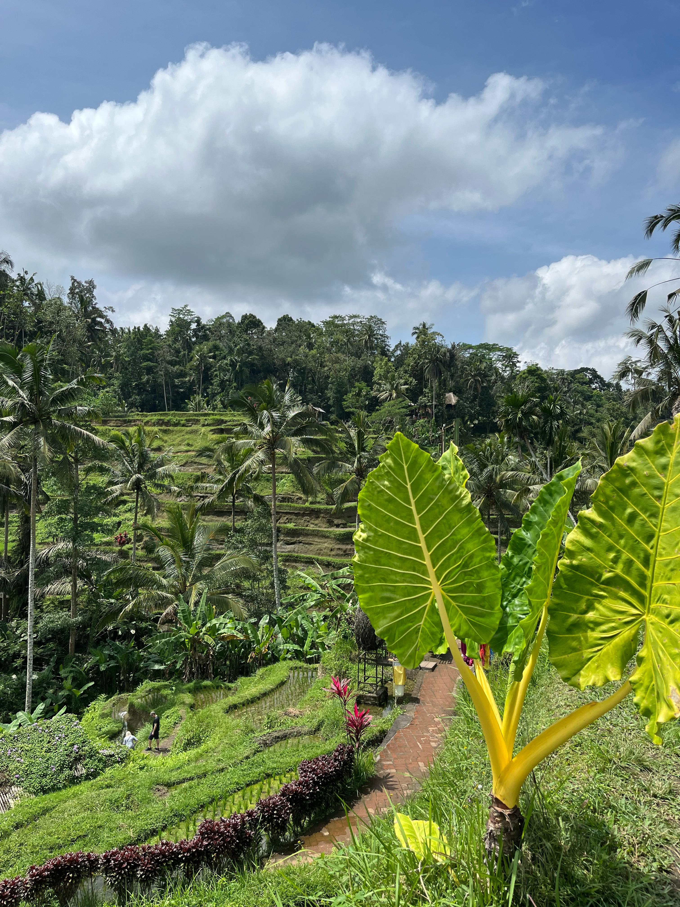
Pirinç, Bali'de yalnızca sofraların vazgeçilmez bir parçası değil, aynı zamanda
yaşamın ve bereketin simgesi. Adanın dört bir yanına yayılan yemyeşil
pirinç tarlaları, yüzyıllardır Bali halkının günlük yaşamında ve kültüründe önemli bir
yere sahip.
Bali'nin pirinç tarlalarını bu kadar özel kılan şeylerden biri de geleneksel
Subak sulama sistemi. Yüzyıllardır kullanılan bu sistem, suyun çiftçiler
arasında düzenli ve adil bir şekilde paylaşılmasını sağlıyor. Aynı zamanda Bali kültürünün
temelinde yer alan insan, doğa ve ruhani yaşam arasındaki dengeyi de temsil ediyor.
Subak sisteminin şekillendirdiği Bali kültürel peyzajı, 2012 yılında
UNESCO Dünya Mirası Listesi'ne alındı. Yani burada gördüğünüz şey
yalnızca güzel bir manzaradan ibaret değil. Bu tarlaların arkasında nesillerdir devam
eden bir yaşam biçimi var.
1. Tegallalang Pirinç Terasları
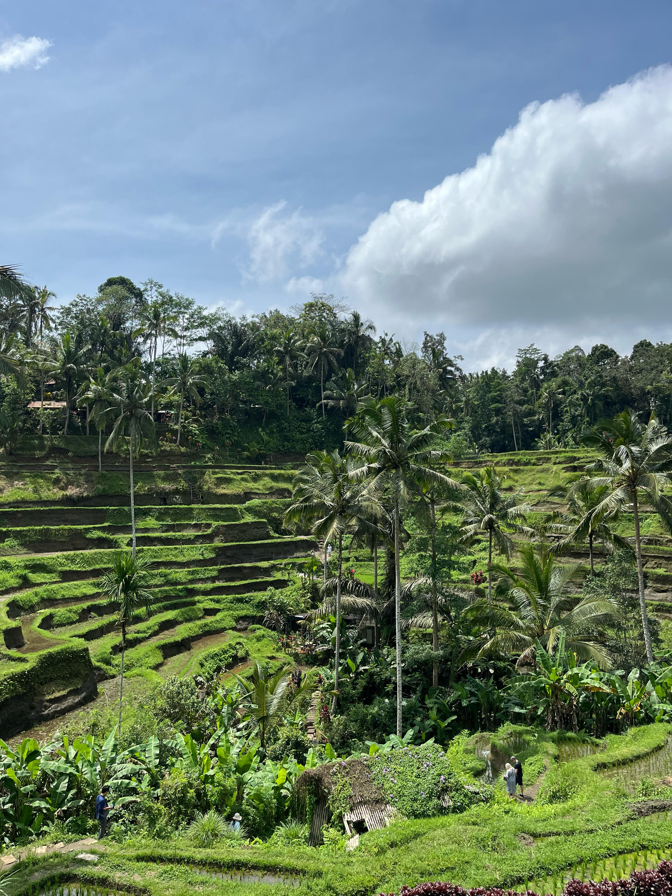
Listemin ilk sırasında, Ubud'a oldukça yakın olan Tegallalang Pirinç Terasları yer alıyor. Burası Bali'nin en popüler noktalarından biri olsa da özellikle sabah saatlerinde çok daha sakin ve güzel bir atmosfere sahip.Tegallalang, Bali'de gördüğüm ilk pirinç terasıydı ve manzarasına hayran kaldım. Dar patikalarda yürümek, kat kat uzanan yemyeşil terasları izlemek ve tropik doğanın içinde biraz kaybolmak burayı yalnızca fotoğraf çekilecek bir yer olmaktan çıkarıyor.
Salıncaklar pek bana göre değil ama siz seviyorsanız burada pirinç tarlalarının üzerinde sallanabilir ve meşhur “I Love Bali” tabelalarında fotoğraf çektirebilirsiniz. Burası bu tarz fotoğraflar için Bali'deki en popüler noktalardan biri.
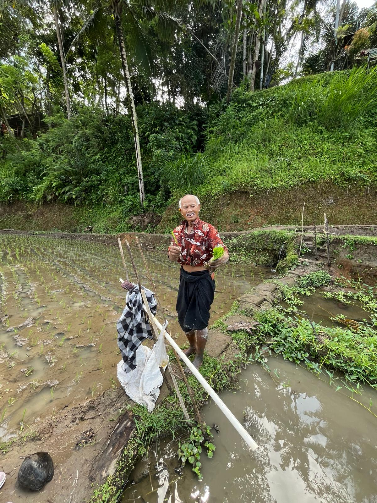
Tegallalang gün içinde oldukça kalabalık olabiliyor. Bu yüzden mümkünse sabah erken saatlerde gelmenizi tavsiye ediyorum. Hem hava daha serin oluyor hem de tarlaların arasında çok daha sakin yürüyebiliyorsunuz. Buraya en az bir saatinizi ayırın. Biraz yürüyüp manzaranın tadını çıkarmaya başladığınızda zamanın nasıl geçtiğini anlamıyorsunuz.2. Jatiluwih Pirinç Terasları
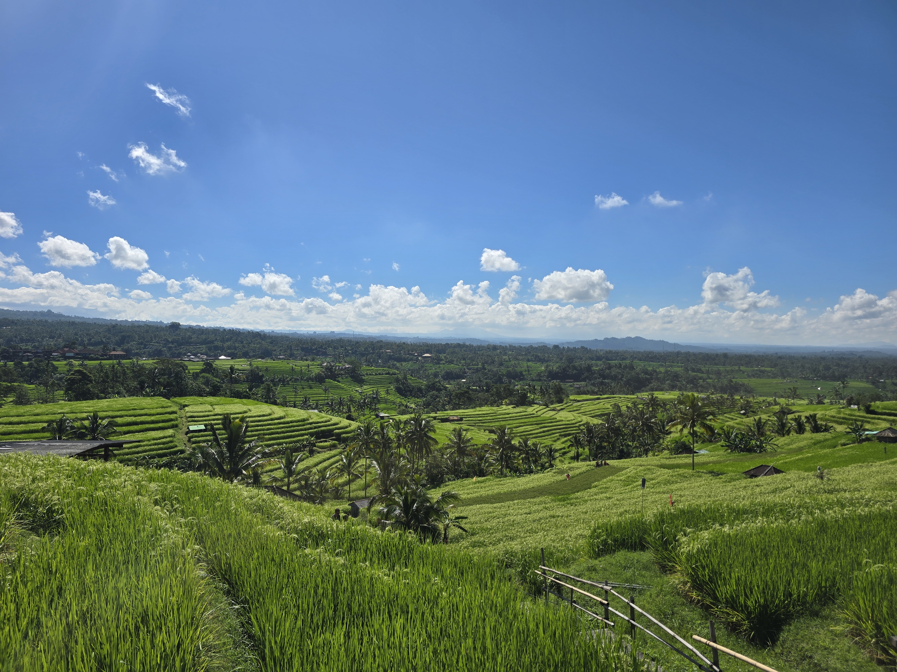
Jatiluwih Pirinç Terasları, UNESCO Dünya Mirası Listesi'nde yer alan Subak kültürel peyzajının bir parçası. Tegallalang'a göre çok daha büyük bir alana yayılmış ve burası genel olarak çok daha sakin. Ubud merkezinden araçla yaklaşık bir buçuk saat sürüyor ama karşılaşacağınız manzara bu yola fazlasıyla değer.Tegallalang daha hareketli ve turistik bir yerken, Jatiluwih'te uzun uzun yürüyüp pirinç teraslarının arasında kaybolabiliyorsunuz. Alan o kadar geniş ki etrafta başka insanlar olsa bile kalabalık hissi oluşmuyor.
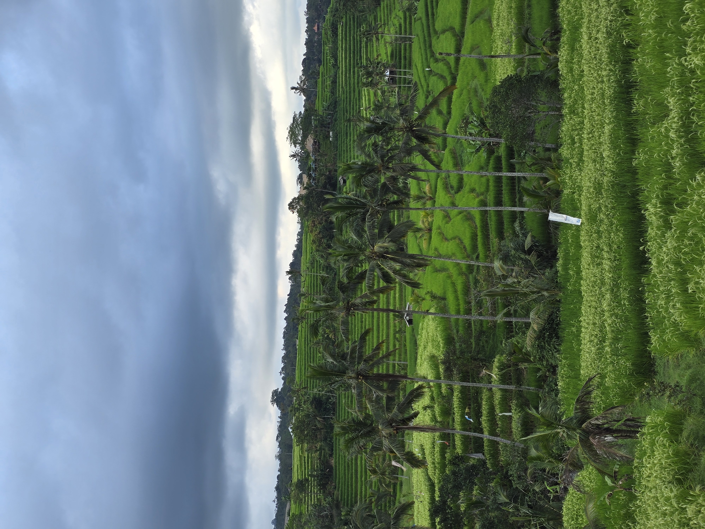
Giriş bölümünde manzaraya karşı oturabileceğiniz güzel kafeler de var. Daha yürüyüşe başlamadan önünüzde uzanan pirinç teraslarını görünce bir süre durup manzarayı izlemek istiyorsunuz.Tegallalang'ı da görün ama Bali'nin pirinç tarlalarını gerçekten uzun uzun gezmek istiyorsanız Jatiluwih'i mutlaka görün. İkisi arasında seçim yapmam gerekse benim tercihim kesinlikle Jatiluwih olurdu.
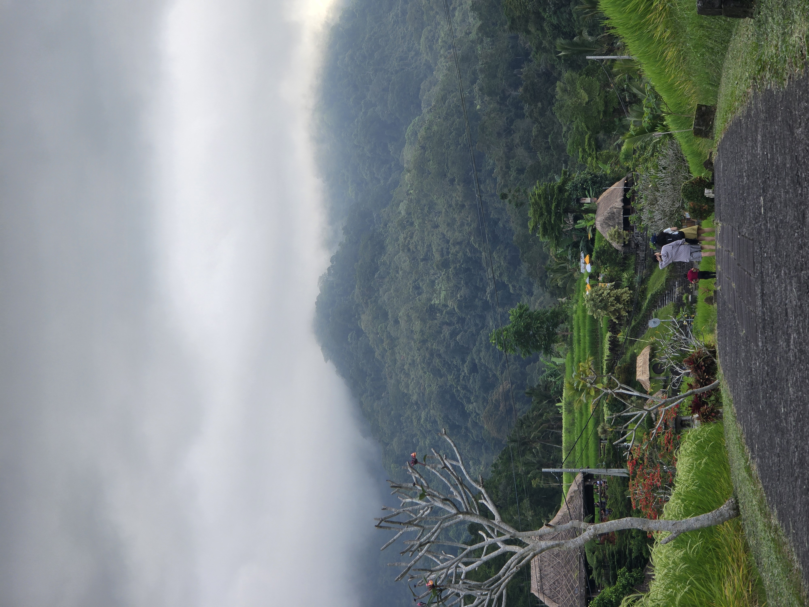
Ubud merkezine biraz uzak olduğu için burayı turla gezmeniz de bir seçenek. Hatta özellikle buralara kadar gelmişken, birkaç noktayı bir arada görebileceğiniz Bali Tanah Lot, Jatiluwih Terası ve Ulundanu Beratan Turu ’nu buraya bırakıyorum.Ulundanu Beratan
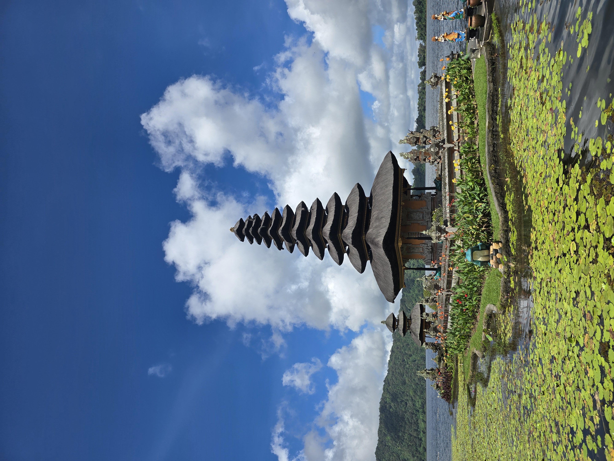
Ulun Danu Beratan Tapınağı, Bali'nin en ikonik simgelerinden biri.
Bratan Gölü'nün kıyısında, deniz seviyesinden yaklaşık 1.200 metre yükseklikte
yer alan tapınak göl, dağlar ve yemyeşil doğayla çevrili. Hava hafif sisli olduğunda manzara
daha da güzelleşiyor ve tapınak gerçekten bir kartpostalın içindeymişsiniz gibi hissettiriyor.
1633 yılında inşa edilen Ulun Danu Beratan, Bali'nin su, göl ve nehir tanrıçası
Dewi Danu'ya adanmış. Göldeki su seviyesi yükseldiğinde tapınağın bir
bölümü suyla çevriliyor ve uzaktan bakıldığında gölün üzerinde yüzüyormuş gibi görünüyor.
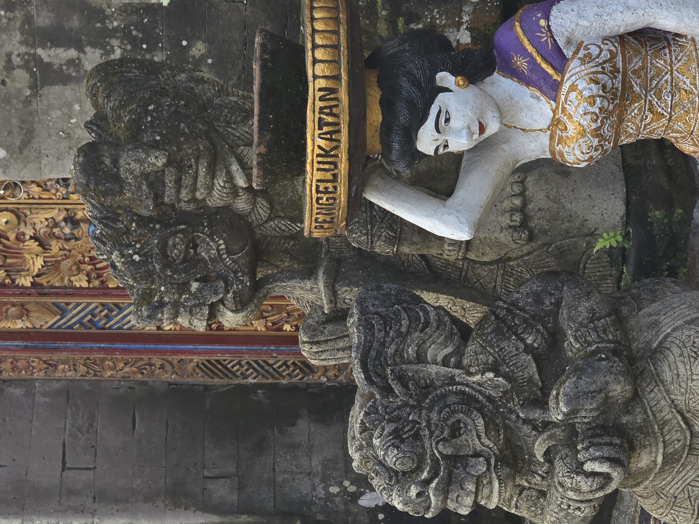
Eğer burası size tanıdık geldiyse, muhtemelen daha önce Bali ile ilgili bir fotoğrafta
karşınıza çıkmıştır. Çünkü Ulun Danu Beratan, adanın tanıtımlarında en sık kullanılan
simgelerden biri. Hatta Bratan Gölü ve tapınak 50.000 rupilik banknotunun arka
yüzünde de yer alıyor.
Tapınak Ubud'a biraz uzak olduğu için burayı Jatiluwih ve Tanah Lot ile aynı güne
sığdırmak oldukça mantıklı. Ben de yukarıda bahsettiğim
Bali Tanah Lot, Jatiluwih Terası ve Ulun Danu Beratan Turu
kapsamında gezdim. Böylece ulaşımı düşünmeden aynı bölgedeki birkaç güzel noktayı bir arada
görme fırsatım oldu.
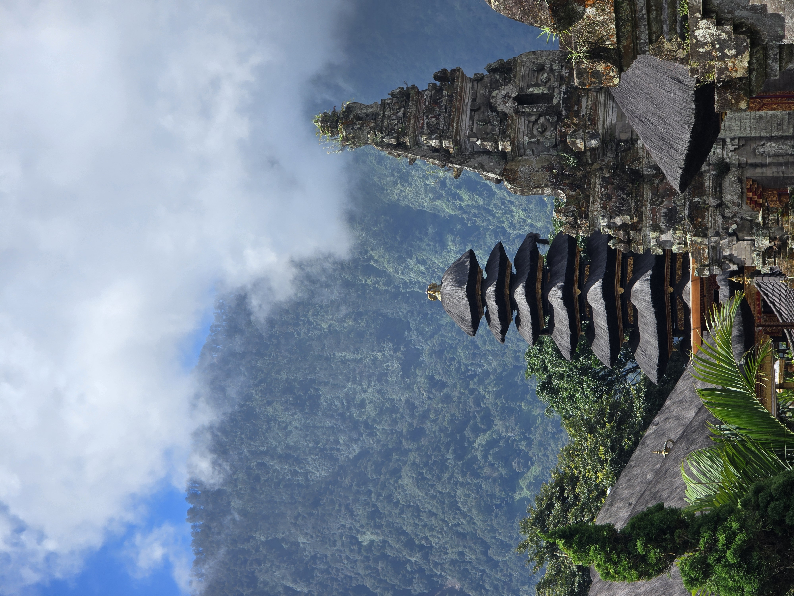
Eğer burayı turdan bağımsız gezecekseniz, sabah erken saatlerde gelmenizi tavsiye ediyorum. Böylece kalabalık başlamadan gölün ve tapınağın tadını daha sakin bir şekilde çıkarabilirsiniz. Burası Bali'nin kıyı bölgelerine göre daha serin olabiliyor. Bu yüzden yanınıza ince bir hırka almanız da iyi olabilir.Tapınak her gün 07.00–19.00 saatleri arasında ziyarete açık.
Giriş ücreti kişi başı 100.000 IDR.
Tanah Lot Tapınağı
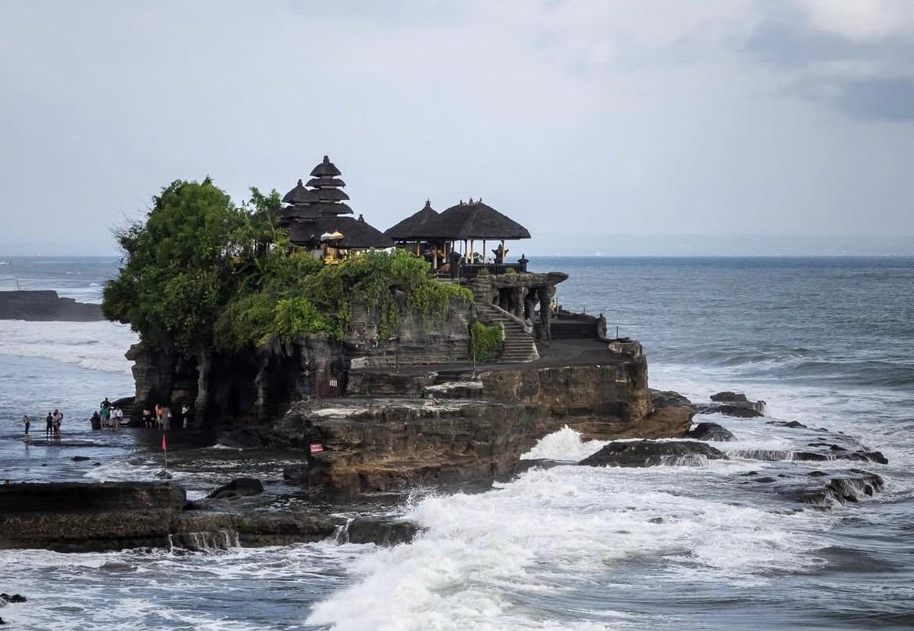
Bali fotoğraflarında mutlaka karşınıza çıkmış olan Tanah Lot Tapınağı, denizin
içindeki büyük bir kayanın üzerine kurulmuş etkileyici bir Hindu tapınağı. Adı da bulunduğu yerden
geliyor. “Tanah Lot” kabaca “denizdeki toprak” anlamına geliyor.
Bali kıyıları boyunca sıralanan yedi kutsal deniz tapınağından biri olan Tanah Lot, deniz
tanrılarına adanmış. Ancak burayı bu kadar meşhur yapan yalnızca dini önemi değil. Dalgaların
ortasında tek başına duran tapınağın görüntüsü, özellikle gün batımında gerçekten çok güzel.
Tapınağın içerisine yabancı ziyaretçilerin girmesine izin verilmiyor. Yine de çevresindeki
yürüyüş yollarını gezebilir ve farklı noktalardan manzarayı izleyebilirsiniz. Gelgit saatleri
buradaki görüntüyü tamamen değiştiriyor. Sular çekildiğinde tapınağın bulunduğu kayaya kadar
yaklaşmak mümkünken, yükseldiğinde tapınak denizin ortasında kalıyor.
Gün batımı Tanah Lot'un en güzel zamanı ama aynı zamanda en kalabalık olduğu saatler. Biraz daha
sakin gezmek istiyorsanız günün erken saatleri daha iyi olabilir.
Tanah Lot her gün ziyaret edilebilirsiniz. Giriş ücreti
kişi başı 75.000 IDR.
Tirta Empul Tapınağı
Tirta Empul, Bali'de yalnızca gezip fotoğraf çekerek ayrılacağınız
tapınaklardan biri değil. Ubud merkezinden yaklaşık 30 dakika uzaklıktaki bu kutsal tapınak, bin
yılı aşkın süredir akan su kaynağı ve burada
gerçekleştirilen arınma ritüelleriyle tanınıyor.
Yerel halk, tapınaktaki kutsal suyun bedeni, zihni ve ruhu kötü enerjilerden arındırdığına
inanıyor. Burası hala aktif olarak ibadet edilen bir yer olduğu için Bali'nin ruhani
tarafını çok daha yakından hissedebiliyorsunuz. Ubud'da birkaç gün geçirecekseniz
Tirta Empul'a rotanızda kesinlikle yer vermenizi tavsiye ediyorum.
Tapınağın en dikkat çekici bölümü, ziyaretçilerin de katılabildiği geleneksel
Melukat arınma ritüeli. Ben de ziyaretim sırasında bu ritüele katıldım
ve Bali'de yaşadığım en farklı deneyimlerden biri oldu. Suyun içine girip sırayla
çeşmelerin altında beklemek, dışarıdan izlemekten çok daha farklı hissettiriyor.
Ritüele katılmak için girişte verilen normal tapınak sarongundan farklı olarak, suya
girmeye uygun özel bir sarong kiralamanız gerekiyor. Özel sarongun kirası kişi başı
10.000 IDR. Eşyalarınızı bırakabileceğiniz dolaplar için de yaklaşık
15.000–20.000 IDR ücret ödeniyor. Yanınıza havlu ve kuru
kıyafet almayı unutmayın.
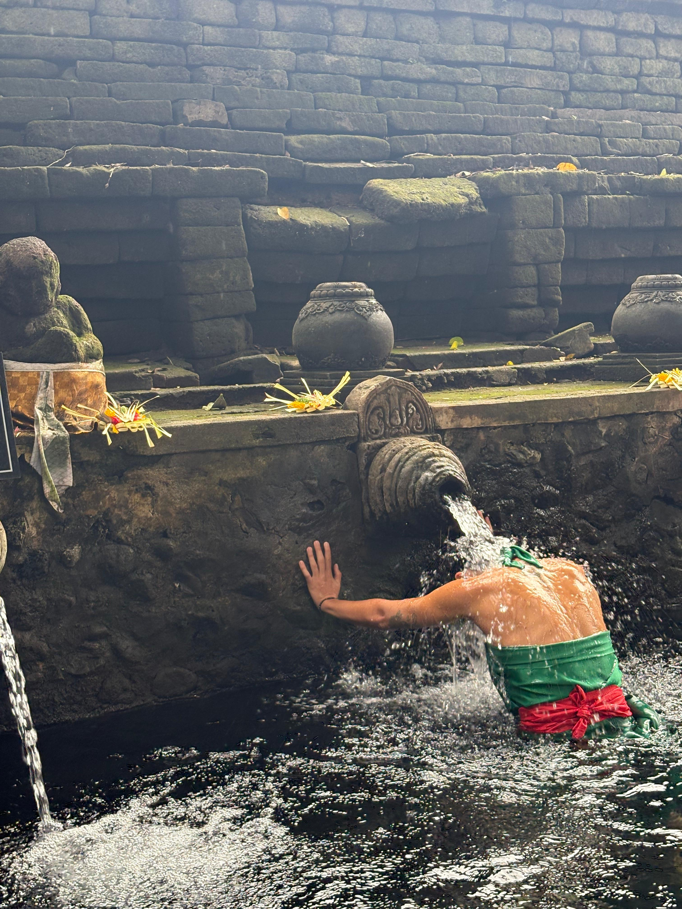
Ritüel sırasında çeşmeleri görevlinin gösterdiği sırayla takip ediyorsunuz. Her çeşmenin
önünde ellerinizi birleştirerek kısa bir dua ediyor, yüzünüzü suyla yıkıyor ve ardından
başınızı akan suyun altına eğiyorsunuz. Herkesin niyeti kendine ait olduğu için o an,
kalabalığın içinde bile oldukça kişisel hissettiriyor.
Çeşmeler boyunca aynı adımları tekrarlayarak ritüeli tamamlıyorsunuz. Bali kültürünün
yüzyıllardır devam eden bu geleneğine yalnızca uzaktan bakmak yerine bir parçası olmak,
tapınağı gezmekten çok daha farklı bir deneyim yaşatıyor. Benim için de Tirta Empul'u
unutulmaz yapan şey tam olarak buydu.
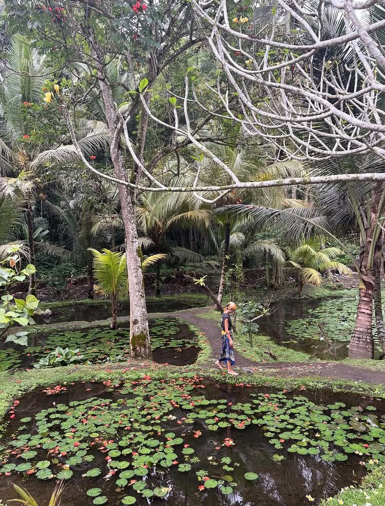
Tirta Empul'u ziyaret etmek için ritüele katılmanız şart değil. Tapınak kompleksi oldukça geniş ve içinde gezebileceğiniz farklı avlular, tapınaklar ve kutsal alanlar bulunuyor. Suya girmek istemezseniz tapınağı yürüyerek keşfedebilir ve arınma ritüelini havuzun çevresinden izleyebilirsiniz.
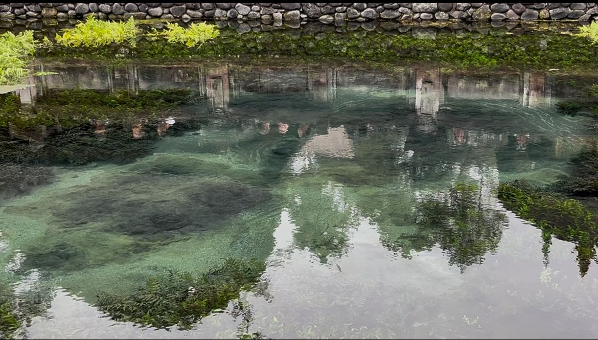
Tapınakta beni en çok şaşırtan yerlerden biri, kutsal suyun çıktığı kaynak bölümü oldu.
Suyun yer altından güçlü bir şekilde yüzeye çıkışını burada çıplak gözle görebiliyorsunuz.
Zemindeki kum ve taşlar sürekli hareket ettiği için ilk bakışta su gerçekten kaynıyormuş
gibi görünüyor. Aslında bu hareketin nedeni, tapınağın arınma havuzlarını besleyen doğal
kaynak suyu.
Ritüele katılmayı düşünüyorsanız mümkün olduğunca erken gitmenizi tavsiye ediyorum.
Gün ilerledikçe ziyaretçi sayısı artıyor ve çeşmelerin önünde uzun sıralar oluşabiliyor.
Sabah saatlerinde hem tapınağı daha sakin gezebilir hem de ritüeli acele etmeden
deneyimleyebilirsiniz.
Giriş ücreti kişi başı 75.000 IDR. Tapınak her gün 08.00-18.00
saatleri arasında ziyarete açık.
Bali'nin kültürel ve manevi yönünü yakından görmek istiyorsanız, Tirta Empul kesinlikle
kaçırılmaması gereken yerlerden biri.
Pemulan Bali Coffee Plantation
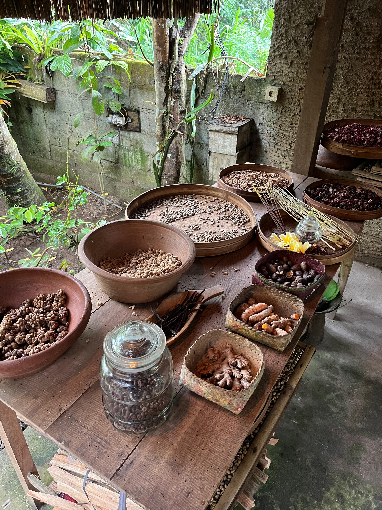
Bali'deki kahve çiftliği deneyimimi Pemulan Bali Coffee Plantation'da yaşadım ve açıkçası beklediğimden çok daha keyifli geçti. İçeri girdiğim anda bana eşlik eden bir rehber, çiftliği adım adım gezdirerek burada yetiştirilen bitkileri ve kahvenin üretim sürecini anlatmaya başladı.
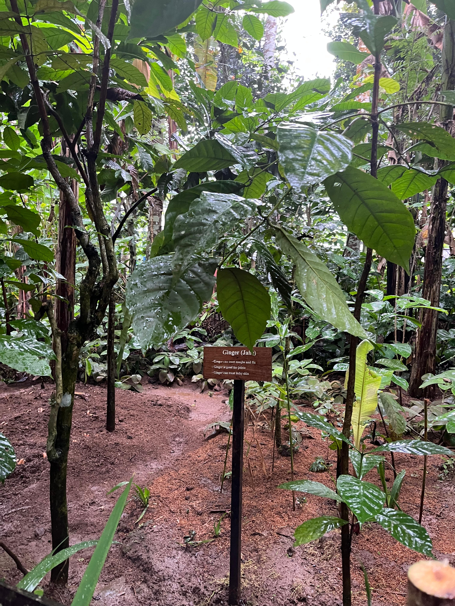
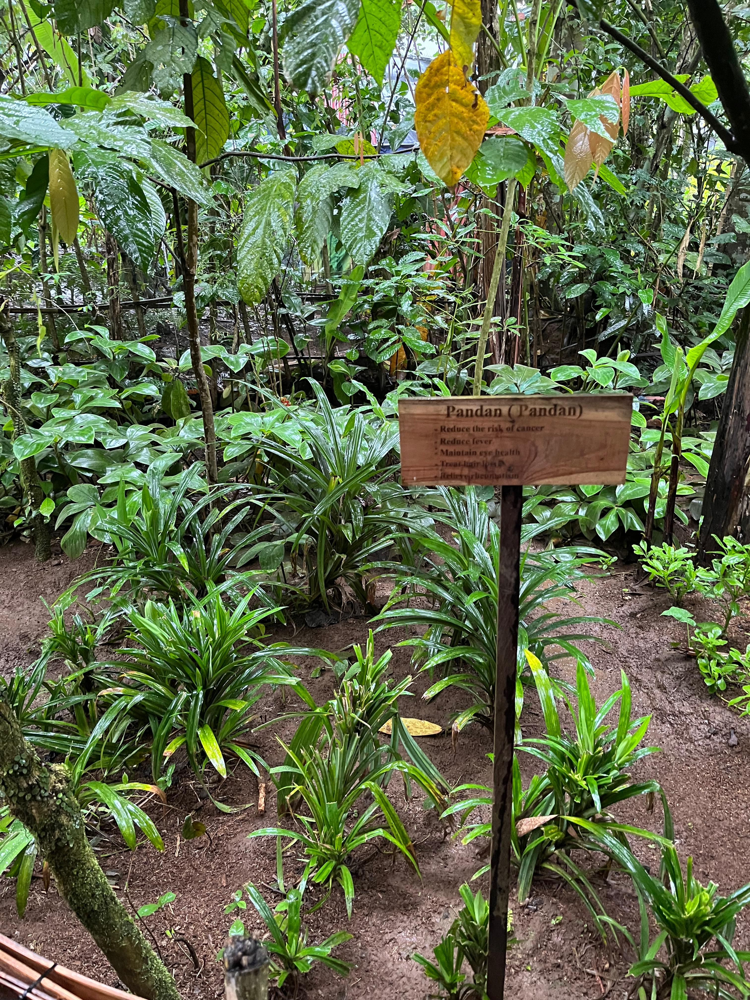
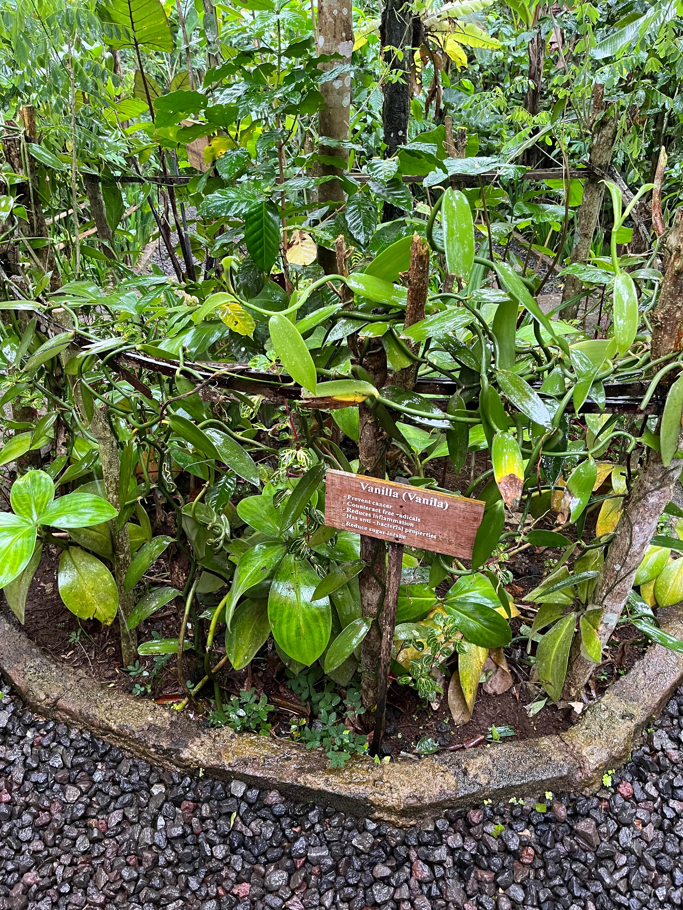
Çiftlikte yalnızca kahve yetiştirilmiyor. Kakao, vanilya, baharatlar ve farklı tropikal
meyveler de bulunuyor. Günlük hayatta çoğunu yalnızca market raflarında gördüğüm bu
ürünlerin nasıl yetiştiğini yakından görmek oldukça ilginçti.
Gezinin en sevdiğim bölümlerinden biri kahvenin işlendiği alan oldu. Burada çalışan yerel
halkla sohbet ederken geleneksel yöntemlerle kahvenin nasıl öğütüldüğünü de yakından
görebildim. Bir süre sonra beni de işin içine dahil edip denememe izin verdiler.
Küçücük bir ayrıntı gibi görünse de yalnızca izlemek yerine sürecin bir parçası olmak,
burayı benim için çok daha keyifli hale getirdi.
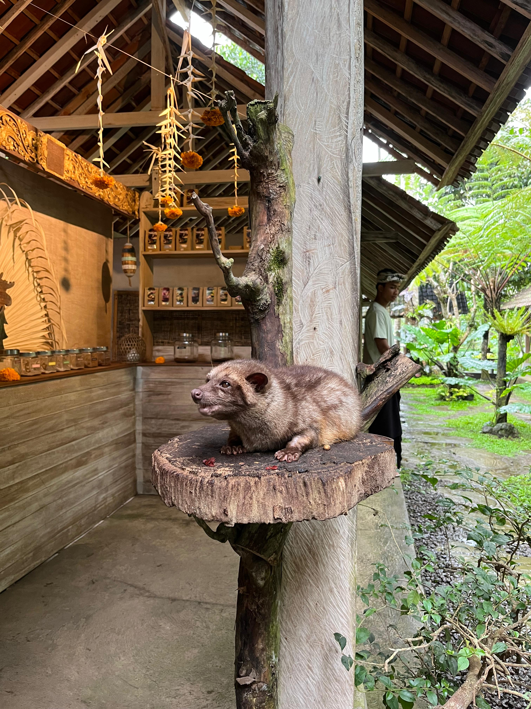
Çiftlikte Bali'nin meşhur Kopi Luwak kahvesinin üretiminde kullanılan
misk kedileriyle de karşılaştım. Hatta olgun kahve meyveleriyle onları
besleme fırsatım oldu. Fakat burası, gezinin keyifli olduğu kadar üzerine düşünülmesi
gereken tarafıydı.
Kopi Luwak üretimi uzun süredir hayvanların yaşam koşulları nedeniyle eleştiriliyor.
Bazı işletmelerde doğadan yakalanan misk kedileri küçük kafeslerde tutuluyor ve doğal
beslenme düzenlerinden uzaklaştırılıyor. Bu nedenle bir kahve çiftliğini ziyaret etmeden
önce yalnızca manzarasına ve tadım seçeneklerine değil, hayvanlara nasıl davranıldığına
da bakmanızı tavsiye ediyorum. Özellikle kafeste hayvan sergileyen işletmeler konusunda
daha dikkatli olmakta fayda var..
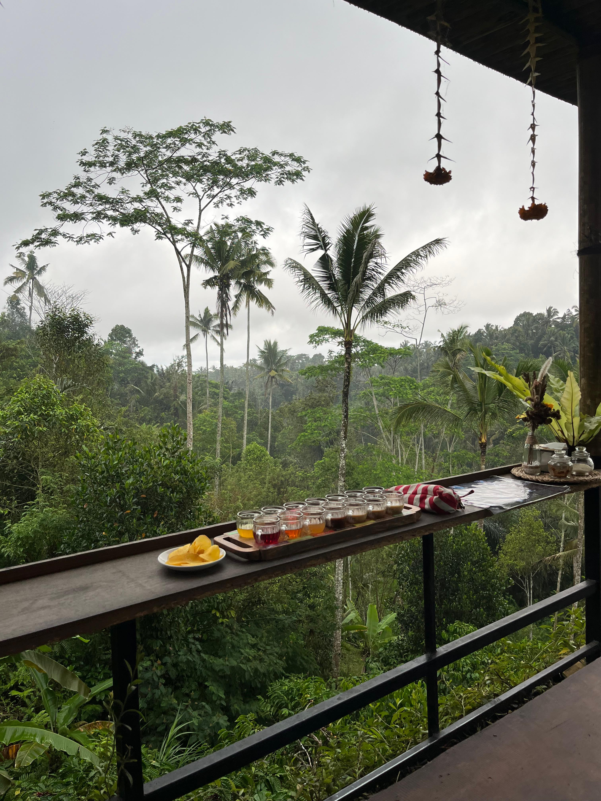
Gezinin sonunda tadım bölümüne geçtim. Önüme farklı kahve ve çay çeşitlerinden oluşan
küçük bir tadım paleti getirildi. Hepsini tek tek deneyerek aralarındaki tat farklarını
keşfetmek oldukça eğlenceliydi. Çiftlik gezisi ve standart kahve ile çay tadımları
ücretsiz. Kopi Luwak kahvesi ise tadım paletine dahil değil ve denemek
isterseniz ayrıca ücret ödemeniz gerekiyor.
Bu molayı benim için asıl güzel yapan şey ise manzaraydı. Yemyeşil doğanın içinde,
acele etmeden tadım yapmak Bali'deki o günün en sakin ve keyifli anlarından biri oldu.
Çiftlik her gün 08.00–19.00 saatleri arasında açık. Tirta Empul'a oldukça yakın
olduğu için
iki yeri aynı günün rotasına kolayca ekleyebilirsiniz.
Ubud Palace ve Ubud Water Palace
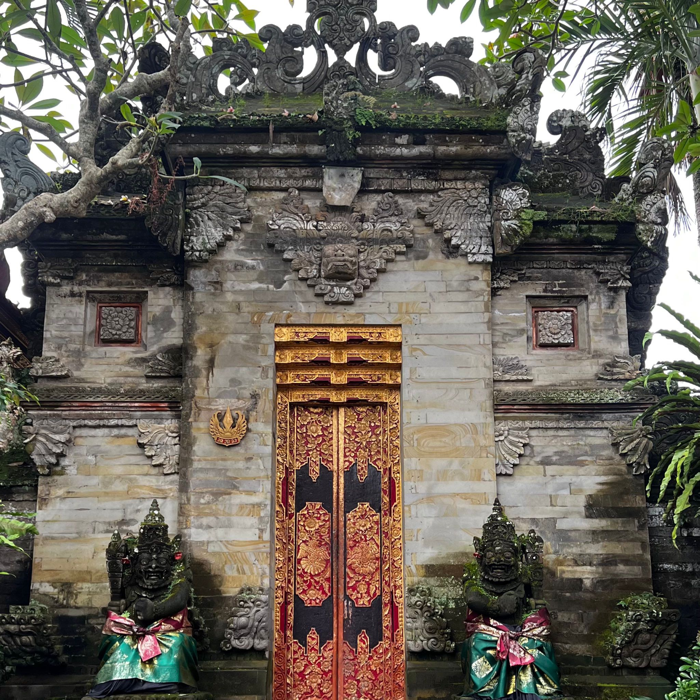
Ubud'un merkezinde dolaşırken Ubud Sarayı mutlaka karşınıza çıkıyor.
Saray çok büyük değil ve yalnızca ilk avlusu gezilebiliyor. Bu yüzden gündüz uğradığınızda
10-15 dakikada gezip çıkacağınız bir yer. Giriş ise ücretsiz.
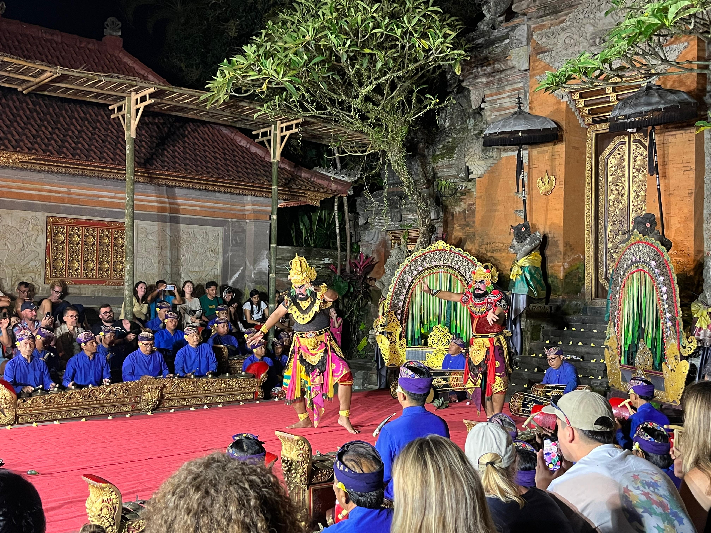
Ubud Sarayı'nı asıl güzel yapan şey akşam düzenlenen geleneksel dans gösterileri. Gündüz gezdiğiniz avlu, hava karardığında rengarenk kostümler ve canlı gamelan müziğiyle bambaşka bir yere dönüşüyor.Haftanın gününe göre Legong, Barong veya Ramayana gibi farklı gösteriler sahneleniyor. Ben Legong dansını izledim. Dansçıların mimikleri, göz hareketleri ve kostümleri gerçekten çok etkileyiciydi. Hikayenin tamamını anlamasanız bile gösteriyi keyifle takip ediyorsunuz.
Gösteri her akşam 19.30'da başlıyor ve yaklaşık 1,5 saat sürüyor. Bilet ücreti kişi başı 100.000 IDR. Biletler sarayın girişinde de satılıyor. Önceden almak isterseniz Ubud Sarayı Legong Dans Gösterisi sayfasına göz atabilirsiniz.
Burada dikkat edilmesi gereken küçük bir detay var: Biletler numarasız. Yani herkes geldiği sıraya göre oturuyor. Ön sıralardan izlemek istiyorsanız erken gitmekte fayda var.
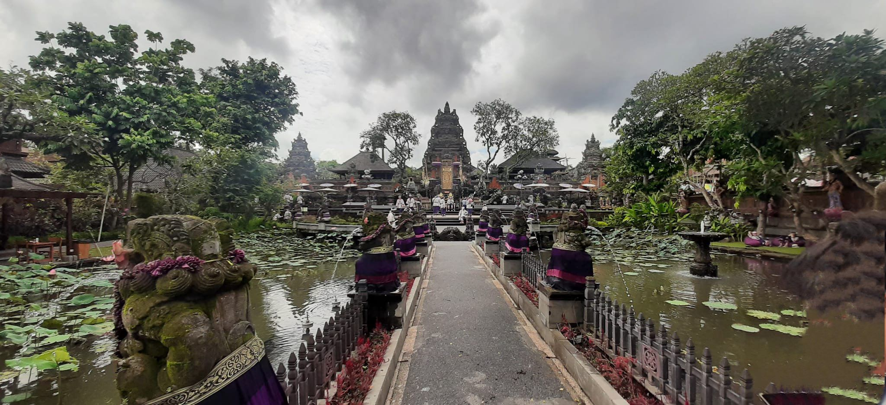
Ubud Sarayı'ndan çıktıktan sonra birkaç dakikalık kısa bir yürüyüşle
Ubud Su Sarayı'na, yani Saraswati Tapınağı'na
ulaşıyorsunuz. Lotus çiçekleriyle dolu havuzu, tapınağa uzanan taş yolu ve ince işlenmiş
detaylarıyla burası bana Ubud Sarayı'ndan daha etkileyici geldi.
Gezilecek alanı biraz daha geniş olduğu için burada daha fazla vakit geçirdim. Havuzun
çevresinde dolaşmak ve tapınağın detaylarını incelemek, Ubud merkezinin kalabalığının
arasında güzel bir mola gibi geldi. Benim için Ubud merkezindeki en güzel yerlerden
biriydi.
Ubud Su Sarayı, cumartesiden perşembeye 08.00–19.30, cuma günleri ise
08.00–21.30 saatleri arasında açık. Giriş ücreti 60.000 IDR.
Ubud Sarayı ile aralarında yalnızca birkaç
dakikalık mesafe olduğu için ikisini peş peşe gezmek en kolayı.
Campuhan Ridge Walk (Campuhan Sırt Yürüyüşü)
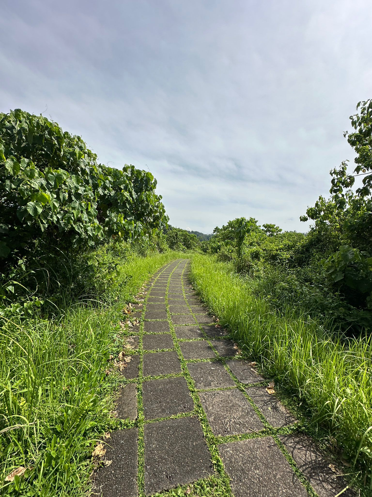
Campuhan Ridge Walk, Ubud merkezinin kalabalığından biraz uzaklaşmak istediğinizde
gidebileceğiniz en güzel yerlerden biri. Girişe kadar şehir içinde olsanız da patikaya çıktıktan
sonra trafik sesi neredeyse tamamen kayboluyor.
Yürüyüş rotası gidiş dönüş toplam yaklaşık 2 kilometre. Başlangıçta kısa bir
yokuş var ama sonrasında yol oldukça rahat ilerliyor. Fotoğraf ve manzara molalarıyla birlikte
yürüyüş için yaklaşık 1 saat ayırmanız yeterli.
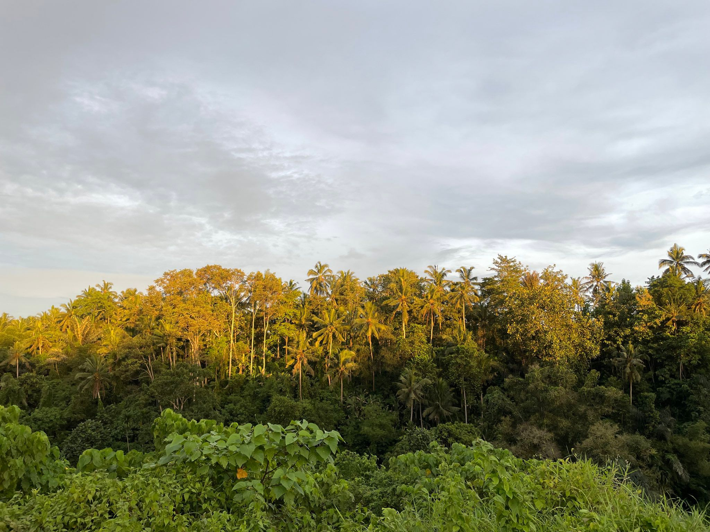
Patika boyunca Ubud'un o yemyeşil tepeleri, vadileri ve pirinç tarlaları eşliğinde yürüyorsunuz. Yol boyunca manzara sürekli değişiyor.
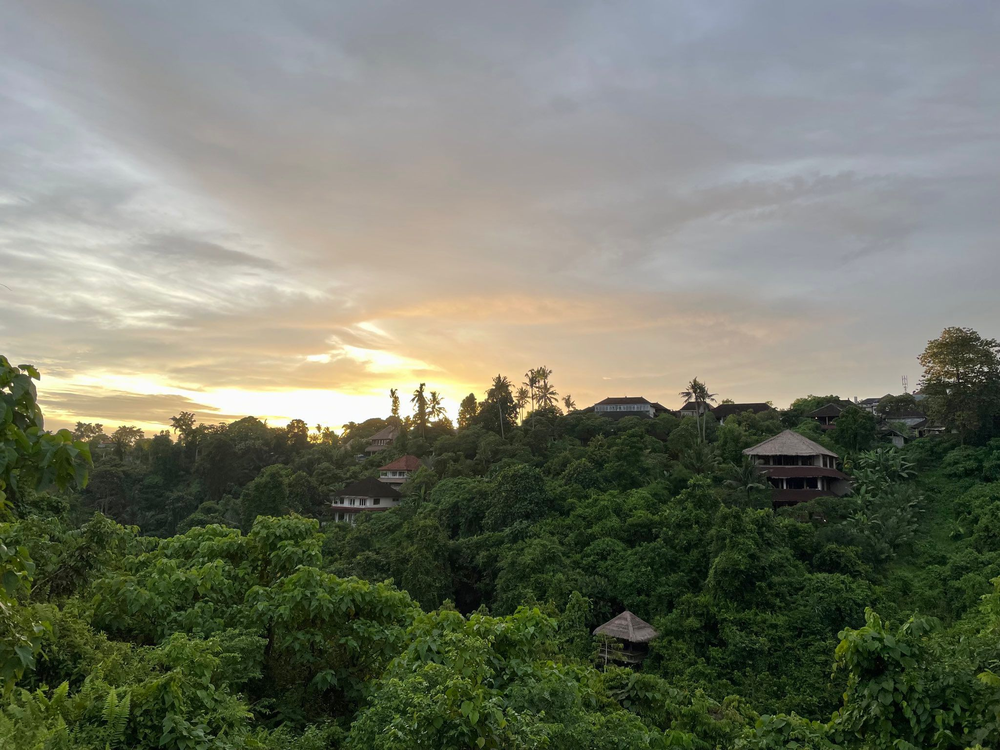
Yürüyüş için en güzel saatler gün doğumu ve gün batımı. Özellikle sabah erken saatlerde geldiğinizde hem hava daha serin oluyor hem de kalabalıklarla karşılaşmıyorsunuz. Gün ortasında ise güneş oldukça etkili olabilir, bu yüzden güneş kremi ve şapka bulundurmakta fayda var.Genel olarak kolay ve rahat bir yürüyüş parkuru ve ücretsiz. Ubud'da güne sakin bir yürüyüşle başlamak istediğiniz bir sabah için burası oldukça güzel bir rota.
The Yoga Barn
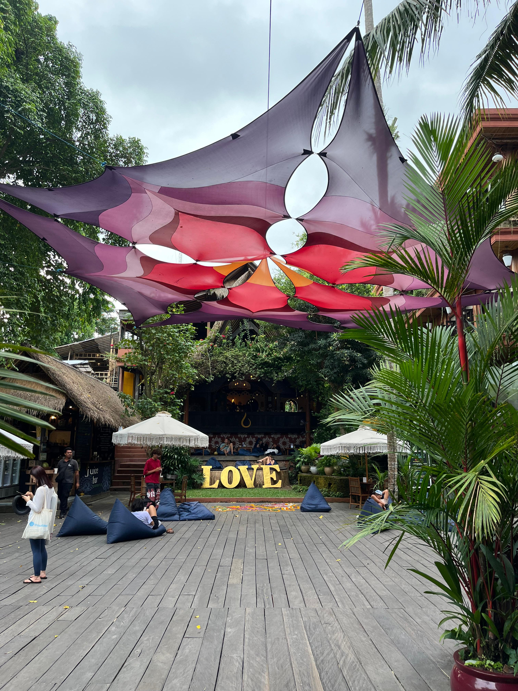
Ubud denince akla yalnızca pirinç tarlaları ve tapınaklar gelmiyor. Yoga, meditasyon ve sağlıklı
yaşam kültürü de şehrin önemli bir parçası. Bunun en bilinen adreslerinden biri ise
The Yoga Barn. Burada yoga ve meditasyonun yanı sıra nefes çalışmaları, dans
dersleri ve birbirinden farklı etkinlikler düzenleniyor.
The Yoga Barn yalnızca derse girip çıkacağınız bir yoga stüdyosu değil. Yemyeşil bir alanın içine
kurulmuş, küçük bir kampüs gibi. İçeride vegan yemekler yiyebileceğiniz restoranlar, kahve
alabileceğiniz noktalar ve oturup dinlenebileceğiniz birçok alan bulunuyor. Çimlerde uzananlar,
kitabını okuyanlar, bilgisayarıyla çalışanlar... Herkes kendi halinde vakit geçiriyor.
Akşamları ortam biraz daha hareketleniyor. Konserler, ses terapileri, dans etkinlikleri ve çeşitli
topluluk buluşmaları düzenleniyor. Dünyanın farklı yerlerinden gelen insanlarla tanışmak da burada
oldukça kolay. Açıkçası The Yoga Barn bana bir yoga merkezinden çok, insanların bir araya geldiği
küçük bir yaşam alanı gibi hissettirdi.
Dilerseniz kampüsün içinde konaklayarak burada birkaç gün geçirme şansınız da var. Katıldığım
dersleri, etkinlikleri, güncel fiyatları ve kendi deneyimlerimi daha ayrıntılı anlattığım
The Yoga Barn Ubud Rehberi
yazısına göz atabilirsiniz.
Batur Dağı
Bali'de biraz macera arıyorsanız, Batur Dağı gün doğumu yürüyüşü tam olarak böyle bir deneyim. Alarm gece çalıyor, hava hala karanlıkken yola çıkılıyor ve gün doğmadan zirveye ulaşmak için yürüyüş başlıyor.
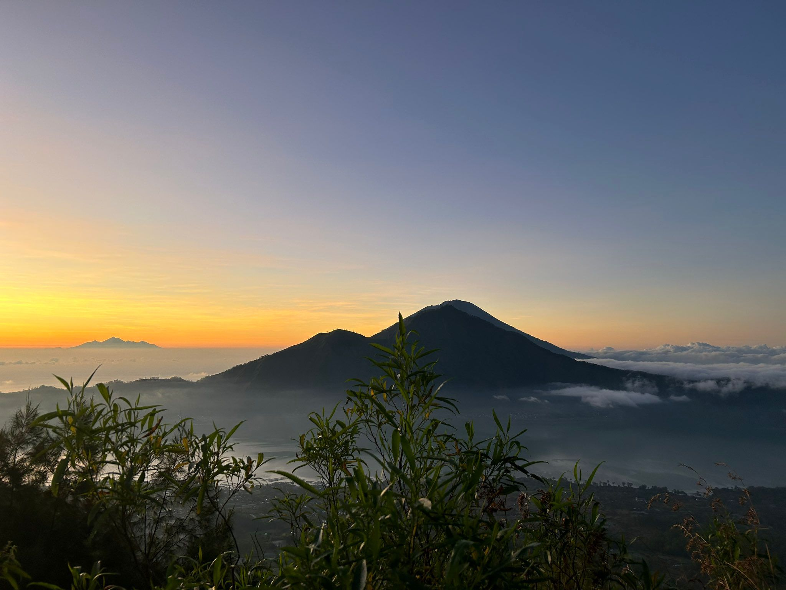
Turlar, kaldığınız bölgeye göre genellikle 03.00-04.00 saatleri arasında otelden
alınmanızla başlıyor. Başlangıç noktasına ulaştıktan sonra yaklaşık 2 saat süren tırmanışa
geçiliyor. Zirveye vardığınızda ise bütün o uykusuzluk ve yorgunluk yerini gün doğumu manzarasına
bırakıyor. Hava açıksa çevredeki dağları ve Batur Gölü'nü de yukarıdan görebiliyorsunuz.
Yürüyüşte hava biraz şaşırtıcı olabiliyor. Bir an soğuktan üşürken kısa süre sonra
terleyebiliyorsunuz. Bu yüzden kat kat giyinmek en rahatı. Yolun
oldukça tozlu olduğunu ve özellikle inişten sonra kıyafetlerinizin toz toprak içinde kalacağını
da bilerek hazırlıklı gidin.
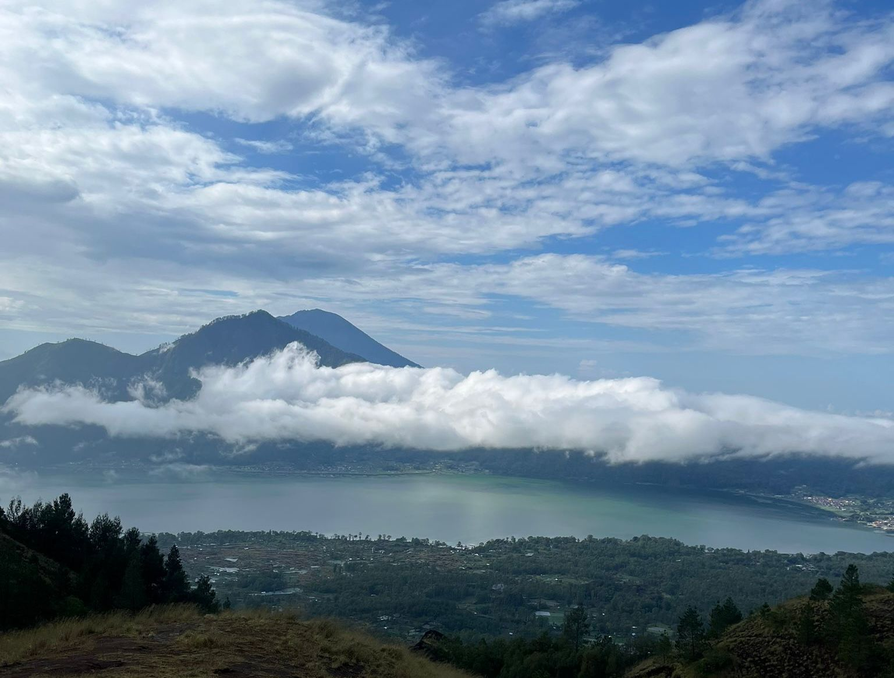
Zirvede manzaraya karşı basit bir kahvaltı veriliyor. Biraz dinlenip gün doğumunu izledikten
sonra iniş başlıyor. Çıkarken karanlıkta fark etmediğiniz volkanik araziyi ve Batur Gölü'nü,
dönüş yolunda çok daha net görebiliyorsunuz.
Otel transferleri ve turun programıyla birlikte tüm deneyim yaklaşık 5-7 saat
sürüyor. Güne bu kadar erken başlamak biraz gelse de zirveden izlediğim gün doğumu,
Bali'de hafızamda kalan en güzel anlardan biri oldu.
Ben bu yürüyüşe
Batur Dağı gün doğumu turuyla
katıldım. Tur arayışındaysanız ayrıntılarına buradan göz atabilirsiniz.
Monkey Forest, Ubud
Ubud merkezinde bir anda tropik bir ormanın içine girmiş gibi hissedebileceğiniz yerlerden biri Monkey Forest. Burası, binden fazla uzun kuyruklu makak maymununun yaşadığı geniş bir koruma alanı.
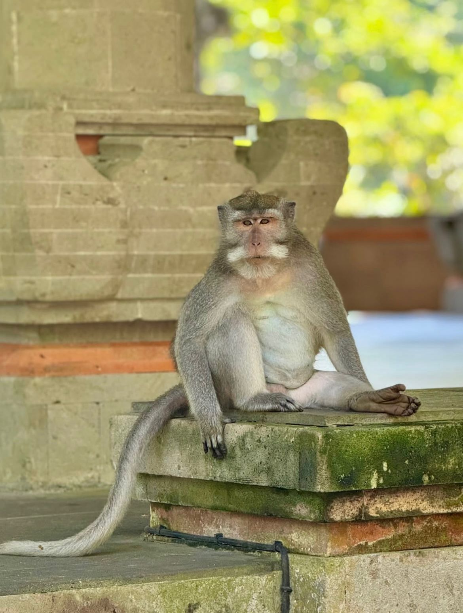
Adı nedeniyle yalnızca maymunları göreceğiniz bir yer gibi düşünebilirsiniz ama içerisi bundan çok daha fazlası. Dev ağaçların arasından geçen yürüyüş yolları, eski Hindu tapınakları, yosun tutmuş heykeller ve taş köprüler var. Ubud'un merkezinde sessiz sakin gizemli bir orman düşünün.
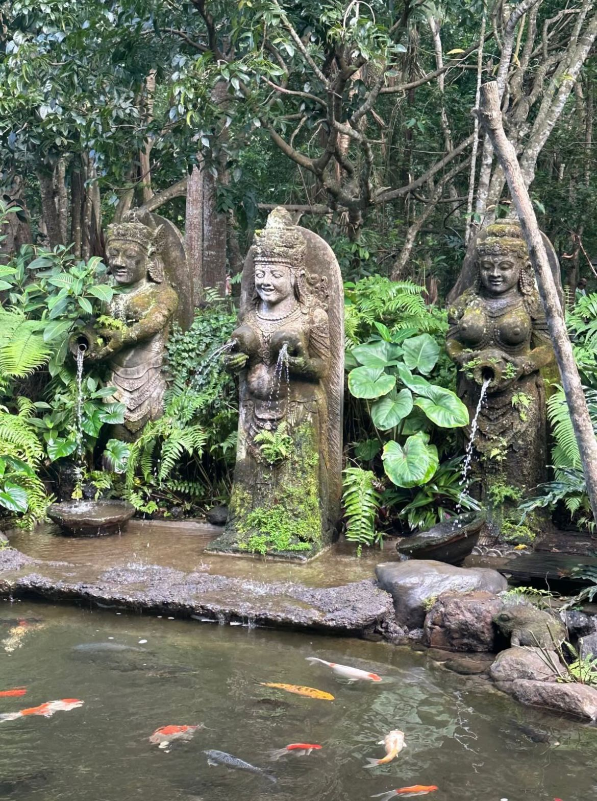
Maymunlar ilk bakışta sevimli görünüyor ama sonuçta evcil değiller. Telefon, gözlük,
şapka ve takı gibi eşyalar ilgilerini çekebiliyor. Bu nedenle eşyalarınızı açıkta bırakmamak ve
maymunlara dokunmaya ya da onları beslemeye çalışmamak gerekiyor.
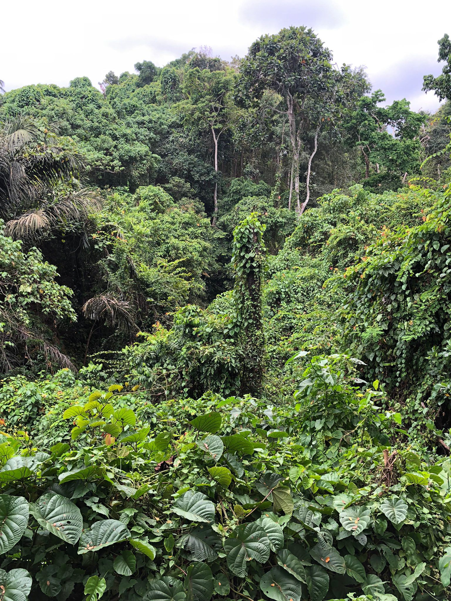
Maymunlara çok meraklı olmasanız bile ormanın atmosferi ve yürüyüş yolları için bence burası görülmeye değer. Ubud merkezinde olduğu için günlük rotaya eklemesi de kolay.Monkey Forest her gün 09.00-18.00 saatleri arasında açık. Son giriş saati 17.00 ve giriş ücreti 130.000 IDR.
Lempuyang Tapınağı ve Tirta Gangga (Su Sarayı)
Evet, sıra geldi Bali fotoğraflarının değişmeyen başrolü
Lempuyang Tapınağı'na. Bali'nin doğusunda yer alan tapınak, özellikle
“Cennetin Kapıları” olarak bilinen kapısının arasından görünen
Agung Yanardağı manzarasıyla meşhur. Bali ile ilgili biraz araştırma
yaptıysanız bu görüntü mutlaka karşınıza çıkmıştır.
Yalnız fotoğraflarda kapının önünde gördüğünüz o kusursuz su yansıması aslında orada
bulunan bir göle ait değil. Fotoğraf çekilirken kullanılan küçük bir aynayla oluşturuluyor.
Üstelik bu meşhur kareyi çektirmek için bazı günler birkaç saat sıra beklemek gerekebiliyor.
Ben Bali'deki zamanımı uzun bir fotoğraf kuyruğunda geçirmek istemediğim için Lempuyang
Tapınağı'na gitmemeyi tercih ettim. Sonuçta herkesin Bali rotası ve seyahatten beklentisi
farklı. Eğer bu fotoğrafı çekmek sizin de Bali hayallerinizden biriyse elbette rotanıza
ekleyin. Sadece nasıl bir ortamla karşılaşacağınızı bilerek ve mümkün olduğunca erken
giderek plan yapmanızda fayda var 😊
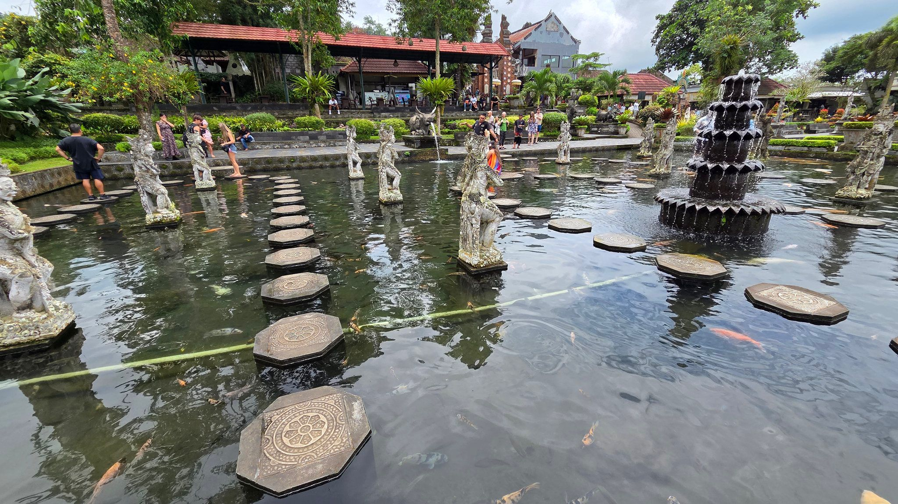
Lempuyang ile aynı bölgede bulunan Tirta Gangga Su Sarayı ise benim
rotamda vardı. Bali ve Çin mimarisinin izlerini taşıyan bu güzel saray, yemyeşil
bahçeleri, çeşmeleri, süs havuzları ve rengarenk koi balıklarıyla oldukça keyifli bir
atmosfere sahip.
Havuzun üzerindeki taşlara basarak ilerlemek ve hemen yanı başınızda yüzen kocaman koi
balıklarını izlemek buranın en güzel taraflarından biri. Çok büyük bir alan değil ama
Doğu Bali rotasına kısa ve keyifli bir mola eklemek için görülmeye değer. Giriş ücreti kişi başı
90.000 IDR.
Lempuyang Tapınağı ve Tirta Gangga birbirine oldukça yakın
konumdalar. Eğer Bali'nin doğu
bölgesine kadar gitmeyi planlıyorsanız, bu iki noktayı aynı gün içerisinde ziyaret etmek
mantıklı bir seçenek olabilir. Özellikle kendi ulaşımınızı ayarlamak istemiyorsanız, her iki
yeri de kapsayan
Cennet Kapıları Turuna
göz atabilirsiniz.
Beach Club Kültürü: Bali'nin Vazgeçilmezlerinden
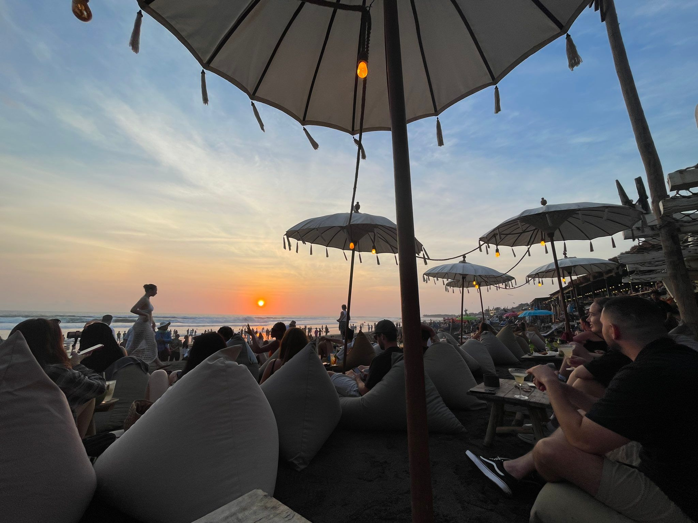
Bali'nin vazgeçilmezlerinden biri de beach club'lar. Özellikle Canggu, Seminyak, Uluwatu
ve Nusa Dua çevresinde birbirinden farklı birçok seçenek bulunuyor. Bazıları daha
sakin bir atmosfere sahipken, bazıları gün boyu devam eden müzikleri ve kalabalığıyla küçük bir
festival alanını andırıyor.
Kimi beach club gün batımı manzarasıyla öne çıkıyor, kimisiyse sonsuzluk havuzları, DJ
performansları ve okyanusa karşı sıralanan şezlonglarıyla. Sabah gidip bütün günü havuz başında
geçirebilir ya da gün batımına doğru uğrayıp bir şeyler yiyip içebilirsiniz. Bali'de en az bir
günü bu şekilde geçirmenizi kesinlikle tavsiye ederim. Gerçekten çok
keyifliler ve kaliteli vakit geçirmek garanti.
Beğendiğim beach club'ları, ortamlarını ve gitmeden önce bilmeniz gerekenleri anlattığım
Bali'nin En İyi Beach Club'ları
yazıma göz atmayı unutmayın. İyi eğlenceler şimdiden. 🙂
Bali'de Yeme - İçme

Geldik Bali'nin en sevdiğim konularından birine: yeme içme. Açık konuşmak gerekirse Bali bu konuda
tam bir dehliz. Birkaç hafta kalsanız bile keşfedilecek yerler bitmiyor. Üstelik ister yerel
Endonezya yemeklerini deneyin, ister dünya mutfaklarını arayın, burada her damak zevkine hitap eden
inanılmaz bir çeşitlilik var.
Sağlıklı vegan kafelerden fine dining restoranlara, uygun fiyatlı yerel warunglardan üçüncü nesil
kahvecilere kadar aklınıza gelebilecek her şeyi bulabiliyorsunuz. Hatta Michelin yıldızlı şeflerin
imzasını taşıyan restoranlarda yemek yiyebiliyor, birkaç saat sonra ise küçük bir aile işletmesinde
hayatınızın en lezzetli yerel yemeklerinden birini tadabiliyorsunuz.
Açıkçası çoğu zaman ne yiyeceğimden çok hangi mekana gideceğime karar vermekte zorlandım. Bu yüzden
Bali'de deneyip gerçekten beğendiğim yerleri
Bali Yeme İçme Rehberi
yazısında bir araya getirdim. Şimdiden söyleyeyim, bu yazıyı okurken acıkmanız oldukça olası. 😊
br
Bali'de Konaklama
Bali'de otel seçmeden önce hangi bölgede kalacağınıza karar vermek çok daha önemli. Çünkü adanın her bölgesi bambaşka bir tatil sunuyor ve haritada yakın görünen yerler trafik yüzünden düşündüğünüzden çok daha uzun sürebiliyor. Bu yüzden önce nasıl bir Bali hayal ettiğinize karar verelim, sonra size en uygun bölgeye birlikte bakalım.
Ubud
Bali'nin kültürel ve daha otantik tarafını görmek istiyorsanız Ubud en güzel seçeneklerden biri. Tapınaklara, pirinç teraslarına ve doğa içindeki birçok noktaya yakın olmasının yanı sıra sokaklarında yürümek bile oldukça keyifli. Merkez kısmı hareketli olsa da biraz dışına çıktığınızda ormanların ve pirinç teralarının arasında çok sakin oteller bulabiliyorsunuz. Deniz tatilinden çok doğa, kültür ve yoga ağırlıklı bir Bali hayal edenlere daha uygun.
Canggu
Canggu, Bali'nin en hareketli bölgelerinden biri. Ünlü beach club'ların, popüler kafelerin, barların ve sörf noktalarının büyük bir kısmı burada bulunuyor. Gün içinde sahilde vakit geçirip akşam eğlenceye devam etmek isteyenler için oldukça keyifli. Yalnız Canggu trafiğinin gerçekten yoğun olduğunu bilmek gerekiyor. Sakin bir tatilden çok hareketli ve sosyal bir ortam arıyorsanız burası size daha uygun olabilir.
Seminyak
Seminyak, konaklama seçeneğinin en fazla olduğu merkezi bölgelerden biri. Büyük
otel zincirlerinden butik otellere, villalardan denize sıfır havuzlu tesislere kadar birçok seçenek
var. Restoranlara, mağazalara ve beach club'lara yakın olmak isteyenler için de oldukça rahat bir
konum.
Seminyak sahilinde denize girilebiliyor ancak dalgalar ve akıntı zaman zaman oldukça güçlü
olabiliyor. Bu nedenle denizin sakin olduğu alanları ve güvenlik bayraklarını takip etmek önemli.
Denize girmek yerine sahilde ya da otelin havuzunda vakit geçirmek isteyenler içinse seçenek çok.
Uluwatu
Bali'nin kayalık kıyılarını, beyaz kumlu plajlarını ve gün batımı manzaralarını görmek istiyorsanız
Uluwatu çok güzel bir bölge. Sörf noktaları, manzaralı restoranları ve son yıllarda
oldukça popüler hale gelen beach club'larıyla öne çıkıyor.
Uluwatu'da oteller ve plajlar geniş bir alana yayıldığı için her yere yürüyerek ulaşmak pek mümkün
değil. Burada kalacaksanız gitmek istediğiniz plajlara yakın bir otel seçmek işinizi oldukça
kolaylaştırır.
Nusa Dua
Nusa Dua, Bali'de lüks ve daha sakin bir tatil denince akla gelen ilk bölgelerden
biri. Büyük uluslararası oteller, geniş havuzlar, bakımlı bahçeler ve sahile uzanan tatil köyleri
bu bölgede yoğunlaşıyor. Deniz de Bali'nin batı kıyılarına göre genellikle daha sakin olduğu için
yüzmek isteyenler ve çocuklu aileler tarafından sıkça tercih ediliyor.
Nusa Dua oldukça düzenli ve huzurlu ancak Bali'nin o hareketli sokaklarını ve yerel havasını burada
çok fazla hissetmeyebilirsiniz. Otelden fazla çıkmadan dinlenmek, denize girmek ve biraz kendinizi
şımartmak istiyorsanız oldukça güzel bir seçenek.
Otel mi, Airbnb mi?
Ben Bali seyahatim boyunca otel yerine Airbnb'de kaldım. Pirinç tarlalarına açılan bir villada
uyanmak, seyahatin en güzel taraflarından biriydi. Daha sakin, daha özgür ve kendime ait bir
alanda olduğum için benim seyahat şeklime otelden çok daha fazla uydu.
Bali'de ev seçenekleri gerçekten çok güzel. Pirinç tarlası manzaralı villalardan özel havuzlu
evlere, küçük bungalovlardan geleneksel Bali mimarisini taşıyan konaklamalara kadar adanın hemen
her bölgesinde farklı bir yer bulabiliyorsunuz.
Benim gibi otel yerine daha kendinize ait bir yerde kalmayı seviyorsanız, karar vermeden önce
Bali'deki Airbnb seçeneklerine
mutlaka göz atın. Otel ararken aklınızda olmayan bir villaya bir anda aşık olabilirsiniz.
Bali’de Konaklamayı İkiye Bölmek
Bali'de uzun bir tatil planlıyorsanız, seyahatin tamamında tek bir bölgede kalmak ilk bakışta daha
kolay görünebilir. Ancak adanın trafiğini hesaba kattığınızda birkaç kez bavul toplamak, her gün
saatlerce yolda kalmaktan çok daha rahat oluyor.
Örneğin tatilin ilk birkaç gecesini Ubud'da geçirerek pirinç tarlalarını,
tapınakları ve adanın iç kesimlerini gezebilirsiniz. Sonrasında Canggu, Seminyak,
Uluwatu ya da Nusa Dua tarafına geçerek denize, plajlara ve beach club'lara daha
yakın olabilirsiniz.
Böylece her sabah adanın bir ucundan diğerine gitmek zorunda kalmaz, kaldığınız bölgenin tadını
acele etmeden çıkarırsınız. Bali'de konaklamayı iki bölgeye ayırmak, küçük bir otel değişikliğinden
çok gün içinde size kalan birkaç ekstra saat demek.
Keşfet, Hisset, Kendi Ritminde Yaşa: Bali
Bali, yalnızca gezilecek yerlerden oluşan bir ada değil. Tapınakları, pirinç terasları,
yemyeşil doğası, plajları ve kendine özgü yaşamıyla her bölgede başka bir yüzünü gösteriyor.
Burada bazen planlı olmak, bazen de günü tamamen akışına bırakmak gerekiyor.
Yola çıkarken Bali trafiğini mutlaka hesaba katın ve aynı bölgede bulunan yerleri birlikte
gezmeye çalışın. Tapınaklarda kurallara saygı gösterin, denize girerken güvenlik bayraklarını
takip edin ve maymunların bulunduğu yerlerde eşyalarınıza dikkat edin. Gün ortasında hava
oldukça sıcak olabildiği için mümkün olduğunca erken yola çıkmak da günü çok daha rahat
geçirmenizi sağlar.
Bali'de her yeri görmek için kendinizi yormayın. Biraz yavaşlayın, etrafınıza
bakın ve planınızda olmayan anlara da yer bırakın. Benim için Bali'yi özel yapan şey, tam
olarak bu anların içinde saklıydı.
Bali hakkında merak ettiğiniz bir şey mi var? Gitmeyi düşündüğünüz yerleri, aklınıza
takılan soruları ya da kendi Bali planınızı yorumlarda benimle paylaşabilirsiniz. Ne merak
ettiğinizi duymak isterim!
Yorum Yaz
E-posta adresiniz yayımlanmayacaktır. Gerekli alanlar * ile işaretlenmiştir.